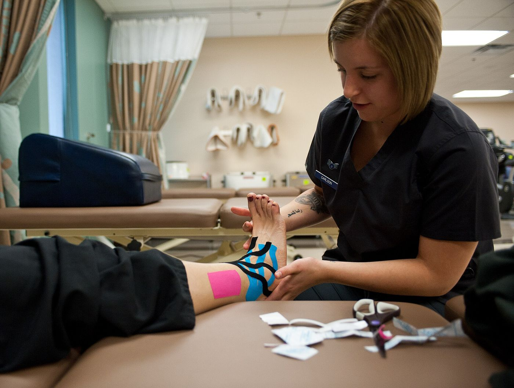

Its riskiest picks got hurt
5.3
as often as the players it rated safest, night after night through 2025-26, a season the model never trained on.
Share of players with a new injury within five games. Across every game, the model’s ranking scores AUC 0.70, and its riskiest tenth of player-games got hurt 2.3 times as often as average.
Five dashboards
Every night of the 2025-26 season, the twelve players the model rated most at risk before tip-off, and what happened to each of them in their next five games.
Open the risk boardWhat comes before each kind of injury
Every comparison163
games a team loses to new injuries each season, about 32 injuries. These are the findings that held in both halves of the seasons.
- 2.5×Two or more injuries in the past yearcompared with everyone elseMuch more likely
- 1.7×Plays 30+ minutes a gamecompared with everyone elseMuch more likely
- 1.7×Late in the regular season (game 60 on)compared with the first 40 gamesMuch more likely
- 44% lessFirst or second NBA seasoncompared with everyone elseLess likely
- 1.3×Age 30 or oldercompared with everyone elseSlightly more likely
- 1.3×Played overtime in the last two weekscompared with no recent overtimeSlightly more likely
32
games a team loses to pulled muscles each season. 32% of them kept the player out five games or more, and 32% hit the same body part again within a year.
- 2.8×Two or more injuries in the past yearcompared with everyone elseMuch more likely
- 2.1×Plays 30+ minutes a gamecompared with everyone elseMuch more likely
- 1.8×Age 30 or oldercompared with everyone elseMuch more likely
- 63% lessFirst or second NBA seasoncompared with everyone elseLess likely
- 1.4×Guardscompared with everyone elseMore likely
- 1.4×First three games back from an injurycompared with games 4 to 10 after a returnMore likely
26
games a team loses to sprained ankles and feet each season. 29% of them kept the player out five games or more, and 37% hit the same body part again within a year.
- 2.0×Two or more injuries in the past yearcompared with everyone elseMuch more likely
- 1.6×Plays 30+ minutes a gamecompared with everyone elseMore likely
- 1.4×First three games back from an injurycompared with games 4 to 10 after a returnMore likely
- 35% lessPlaying at altitude (Denver, Utah)compared with other arenasLess likely
- 31% lessPlayed far fewer minutes than usual last gamecompared with a usual last gameLess likely
- 1.3×Late in the regular season (game 60 on)compared with the first 40 gamesSlightly more likely
37
games a team loses to knocks and collisions each season. 25% of them kept the player out five games or more, and 23% hit the same body part again within a year.
- 2.1×Two or more injuries in the past yearcompared with everyone elseMuch more likely
- 1.8×Plays 30+ minutes a gamecompared with everyone elseMuch more likely
- 1.6×Late in the regular season (game 60 on)compared with the first 40 gamesMore likely
- 1.4×Long stretches on the floor lately (10+ minutes)compared with shorter stretchesMore likely
- 35% lessFirst or second NBA seasoncompared with everyone elseLess likely
- 1.3×Played overtime in the last two weekscompared with no recent overtimeMore likely
33
games a team loses to knee problems each season. 27% of them kept the player out five games or more, and 49% hit the same body part again within a year.
- 2.7×Two or more injuries in the past yearcompared with everyone elseMuch more likely
- 2.1×Late in the regular season (game 60 on)compared with the first 40 gamesMuch more likely
- 1.6×Plays 30+ minutes a gamecompared with everyone elseMore likely
- 60% lessFirst or second NBA seasoncompared with everyone elseLess likely
- 1.4×First three games back from an injurycompared with games 4 to 10 after a returnMore likely
- 1.3×Attacks the rim the most (top quarter)compared with everyone elseMore likely
8
games a team loses to back problems each season. 16% of them kept the player out five games or more, and 36% hit the same body part again within a year.
- 3.1×Two or more injuries in the past yearcompared with everyone elseMuch more likely
- 1.6×Big men (6'10" or taller)compared with everyone elseMore likely
- 1.6×Late in the regular season (game 60 on)compared with the first 40 gamesMore likely
- 51% lessFirst or second NBA seasoncompared with everyone elseLess likely
- 1.5×Plays 30+ minutes a gamecompared with everyone elseMore likely
26
games a team loses to other aches and pains each season. 22% of them kept the player out five games or more, and 40% hit the same body part again within a year.
- 3.1×Two or more injuries in the past yearcompared with everyone elseMuch more likely
- 2.3×Late in the regular season (game 60 on)compared with the first 40 gamesMuch more likely
- 1.7×Plays 30+ minutes a gamecompared with everyone elseMore likely
- 1.5×Age 30 or oldercompared with everyone elseMore likely
- 46% lessFirst or second NBA seasoncompared with everyone elseLess likely
- 1.4×Played overtime in the last two weekscompared with no recent overtimeMore likely
1,595
official NBA injury reports read, one for every game day from December 2018 to June 2026.
From reports
to a ranking
Every game day the league publishes an injury report: who is out, and why. I matched every line to a player and a game, then asked one question before every game, for every player: how likely is a new injury in the next five games?
Read
134,220 report lines, 99.8% of them matched to a player.
Match
6,773 new injuries across 187,799 player-games, with what each player had been doing beforehand.
Rank
A chance of a new injury for every player before every game, checked on two seasons the model never saw.
- Built withPython, pandas and scikit-learn
- Seasons2019-20 to 2025-26, tested on 2024-25 and 2025-26
- Code and methodgithub.com/bryanhkwan
Who made this
Bryan Kwan built this to find out what public data can say about NBA injuries before they happen, and what it can’t.
Everything here comes from public sources: the league’s official injury reports, box scores and play-by-play. The model was tested on two seasons it never saw, misses included. On an average night about 1.9 players per team sit out with a new injury, and most of those injuries never show up in a box score.
It ranks risk; it can’t say why any one player got hurt, and it isn’t medical advice. College results appear only as totals. Not affiliated with the NBA or the NCAA.